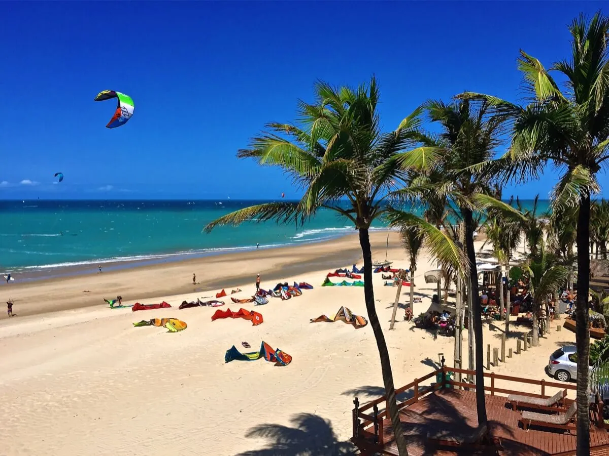

Cumbuco time: 1 week
One of the oldest and most famous spots, where most kitesurfers start their Brazilian adventure, and so are we. Location close to the airport will allow some flexibility with arrival times. Social vibe and lots of events will allow us to dive deep into Brazilian lifestyle straight from the beginning.
In Cumbuco, you can experience it all: flat-water lagoons just a short downwind or drive away, choppy ocean conditions, and waves.